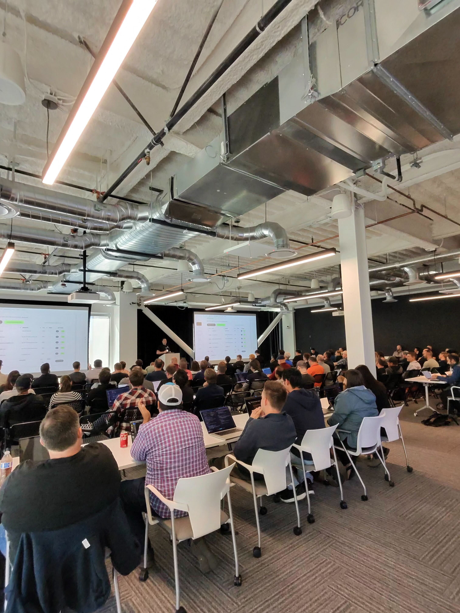

The barrier isn't data or compute — it's knowing what decisions to make.

Using the Titanic dataset — predict who survived based on passenger info.
Grab the CSV from a URL or upload your own.
Choose the target column — we'll detect if it's classification or regression.
The agent picks the best algorithms and trains an ensemble.
Enter your passenger details and see the prediction.
Real-time pipeline visualization, step tracking, and run history.
Choose a training flow to visualize its execution graph.
Each step is a @step-decorated function that runs independently.
Track completed, running, and failed runs with step-level details.
@card decorators automatically capture metrics, tables, and markdown.
Semantic search over ML documentation, training guides, and error solutions.
Enter a query to find relevant ML documentation or error solutions.
Real-time tracing of agent calls, LLM interactions, and quality scores.
Click a trace to see full details including prompts, generations, and scores.
Full breakdown of the selected trace with latency, tokens, and scores.
Track quality across sessions with automated scoring.
Supervised Fine-Tuning, Direct Preference Optimization, and Group Relative Policy Optimization.
Select a fine-tuning approach based on your data and goals.
Set base model, hyperparameters, and dataset format.
Watch the model learn in real-time.
Your fine-tuned adapter is ready for inference.
Multi-agent system searches knowledge base + web to diagnose and fix errors.
Choose a common ML/LLM training error for the agent to investigate.
Multi-agent pipeline searches Qdrant, SearXNG, and fetches documentation.
Agent uses LLM to evaluate relevance and filter out low-quality results.
Actionable fix with code snippets and configuration changes.
AI Makerspace · Cohort 9